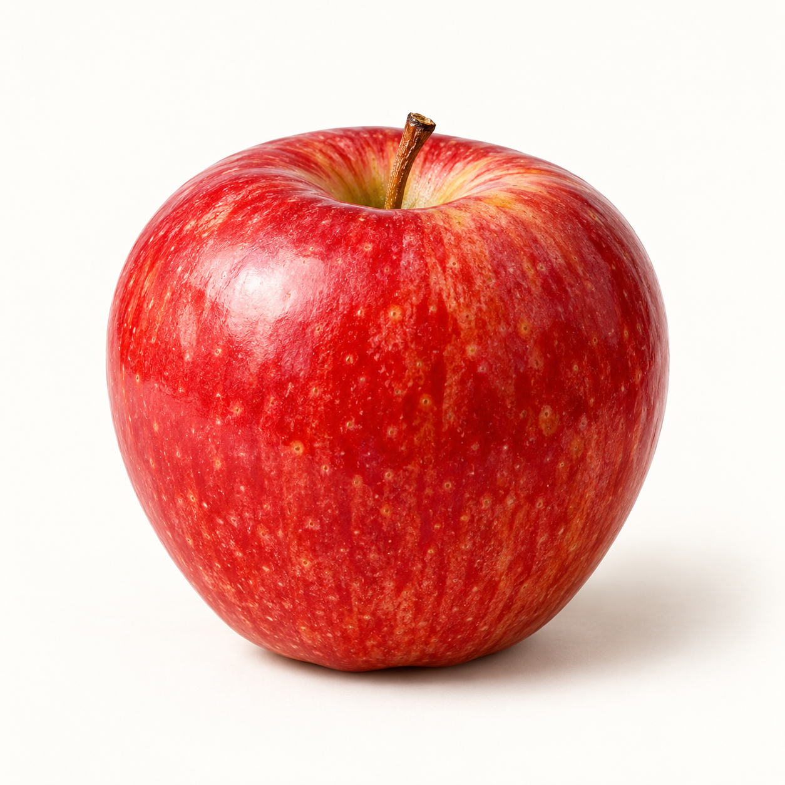

보고 읽기1 / 3
사진을 보고 읽어봐요.

소리 출처
사과
사진 속 낱말을 함께 말해봐요.
이렇게 써요
사과
연한 글자를 따라 천천히 써봐요.
사진을 보고 터치펜이나 손가락으로 써봐요.
선생님이 확인해 주세요
손글씨는 선생님과 확인한 뒤 학습 완료를 눌러주세요.
사진에 맞는 낱말을 골라봐요.
빈칸에 들어갈 글자를 눌러봐요.
보고, 써보고, 알맞은 글자를 찾아봐요.
다른 글자를 입력하거나 전체 분류에서 찾아보세요.

사진 속 낱말을 함께 말해봐요.
연한 글자를 따라 천천히 써봐요.
사진을 보고 터치펜이나 손가락으로 써봐요.
손글씨는 선생님과 확인한 뒤 학습 완료를 눌러주세요.
사진에 맞는 낱말을 골라봐요.
빈칸에 들어갈 글자를 눌러봐요.
🌱 조금씩, 천천히. 오늘의 작은 도전을 응원해요.